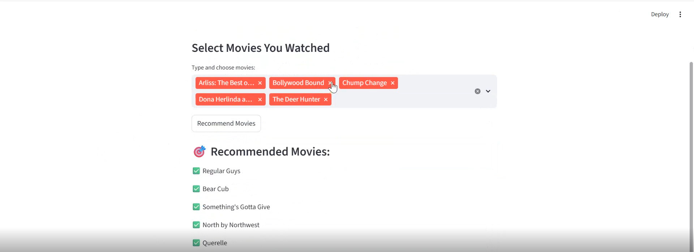

Movie Recommendation System
SourceEngineered a Transformer-based collaborative movie recommendation system that models user watch history as sequential tokens, leveraging multi-head self-attention in PyTorch to predict next-movie preferences from large-scale Netflix rating data.
Python
•
PyTorch
•
Transformer Encoder (Self-Attention)
•
Pandas/NumPy
•
Sequential Data Processing